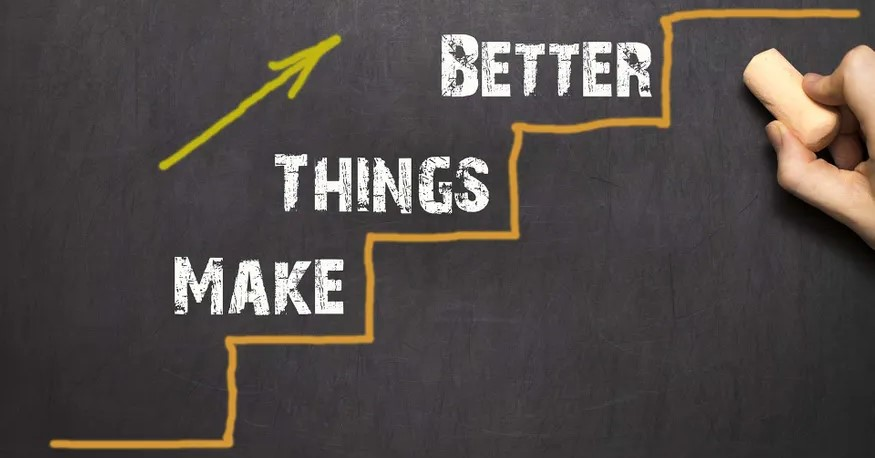

past
I struggled the most when...
Completing the JavaScript Katas. In particular, 'JS-Gradebook'. I was unable to get the average of a given array. From writing the pseudocode out, I was able to understand the flow of the problem. I was still unable to create working code but managed to find a solution on the website StackOverflow. I did not use that well of a structure to solve this issue, I firstly spent more time trying different random methods than actually researching into the problem.

Since I have researched on problem solving this past week, I have come to the realisation that there are many ways to solve problems. Techniques that help amateur developers become more efficient at writing code, or at any other problems that a person may go through.
“If you get stuck, get away from your desk. Take a walk, take a bath, go to sleep,
make a pie, draw, listen to music, meditate, exercise; whatever you do, don't just
stick there scowling at the problem. But don't make telephone calls or go to a party;
if you do, other people's words will pour in where your lost words should be. Open a
gap for them, create a space. Be patient.”
― Hilary Mantel
present
Can only go up from here
I am putting these newly found techniques to good use. Not that I have mastered them, cause no, I am still a noob. But I have made the promise to keep trying to learn these fundamental tools. Right now, my best friends are the DevTools and Pseudocode.

- Indentify the Issues- What is the problem asking of you?
- Understanding Everyone's Interests - What is needed to solve every issue?
- List the Different Possibilties - How many ways solutions are there?
- Evaluate the Options - Which solutions will be the most effective?
- Selecting the Best Option - What solution will fit best?
- Implement and Evaluate - How will it be implemented?
future
What I hope to be confident in
I want to be better at reflecting on what I have accomplished. I want to be able to progress further using the tools of; Pseudocode, Rubber Ducky Method, Googling solutions, and asking my peers / facilitators for help.
Right now I am not the most confident using many of these techniques but I hope to soon. I feel like understanding problem solving is fundamental to the programming world.
“Treat challenges as an opportunity to refocus your strategies and open up new horizons.”
― Oscar Auliq-Ice